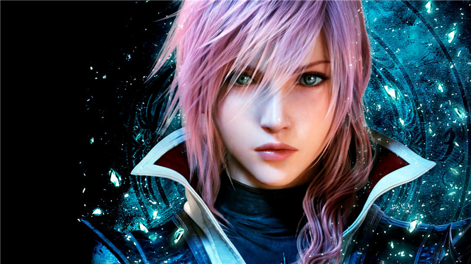

- 最新幻想13
- 此处可列目录 2
- 此处可列目录 3
- 此处可列目录 4
- 此处可列目录 555
- 此处可列目录 66666
最终幻想13共分三部，分别为ff13，ff13-2，ff13雷霆归来，目前已经通关一周目

最终幻想13和最终幻想13雷霆归来的主角均为雷光，最终幻想13-2的主角为雷光的妹妹

尽管第一部的线性剧情和繁多的过长cg令人诟病，但是我还是最喜欢第一部，也许是本身玩游戏就是为了看剧情的原因，我们都不会忘记雷光最后露出笑容的样子

第二部在剧情上几乎像是硬生生在第一代上挖坑挖出来的，反正一开始的时候是没有玩懂，后来玩懂了，但是感觉并没有那么ff13，特点根据时间线来不同的穿梭，所以有时候剧情会让人疑惑

雷霆归来就是题目所说，雷霆归来，开场的CG就很好看，这部是所有ff13中可玩性最高的，而且世界也足够开放，不过有时间的限制，不过对于我这种懒得清理支线的人，时间绰绰有余

也许最大的特点是雷霆姐的换装，加上DLC里各种各样的衣服，烦你所要，应有尽有

再买了新电脑之后，感觉原来在1366的分辨率下，全低特效玩游戏，简直是对游戏的亵渎，让我都有一种重新玩一次的冲动，也许有时间的话会考虑一下


- 其他
Collect from 网页模板